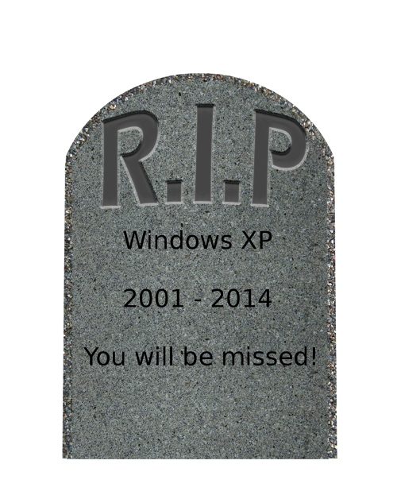
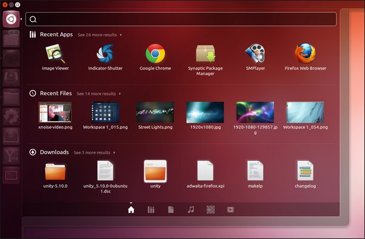

Microsoft inchide Windows XP din 8 aprilie 2014
In mai putin de 3 luni, pe 8 aprilie 2014, Microsoft va inceta sa mai ofere update-uri de securitate
si suport pentru Windows XP, conform anuntului facut anul trecut de oficialii companiei infiintate de
Bill Gates: Microsoft Blogs - Windows XP se inchide pe 8 aprilie 2014. In acelasi timp, oficialii
Microsoft ii indeamna pe utilizatorii care inca folosesc Windows XP sa treaca in cel mai scurt timp posibil
la un sistem de operare modern
, adica la Windows 7 sau Windows 8.
Lansat in octombrie 2001, Windows XP a fost multa vreme cel mai folosit sistem de operare produs de cei de la Microsoft, in ciuda lansarii Windows Vista si Windows 7. La ora actuala se pare ca batranelul XP are inca o cota de piata de 38% la nivel mondial, ceea ce dovedeste ca este inca foarte apreciat la nivelul utilizatorului final. Si exista si motive, intrucat XP (ajuns la al treilea Service Pack) este unul dintre cele mai stabile sisteme de operare, dupa unii, capodopera celor de la Microsoft.
In mod surprinzator, Security Essentials va fi mentinut pentru Windows XP pana in 14 iulie 2015, oferind
pana la aceasta data cele mai noi update-uri ale semnaturilor antivirus pentru batranul
sistem de operare.
Daca site-urile de stiri se hazardeaza ca din aprilie utilizatorii calculatoarelor cu XP sunt tinte sigure
ale hackerilor
sau ca riscam sa ne pierdem banii de pe card pentru ca majoritatea covarsitoare a bancomatelor
folosesc XP ca sistem de operare
, totusi e foarte putin probabil ca peste 3 luni sa avem de-a face cu o nimicire
a calculatoarelor care inca mai folosesc vechiul sistem de operare.
Producatorii de antivirusi anunta ca vor suporta Windows XP si dupa 8 aprilie:
- Bitdefender va oferi protectie antivirus pentru XP pana la 8 aprilie 2015;
- Kasperski a anuntat ca va proteja sistemele Windows XP pana in 2018;
- Norton nu a facut inca publica o data, dar cu siguranta nu vor opri suportul in 2014;
- Trend Micro va oferi suport pentru XP pana in ianuarie 2017;
- Avira a anuntat ca va permite instalarea produselor sale pe XP pana in aprilie 2015;
- majoritatea producatorilor de antivirusi fie nu au luat o decizie inca, fie au anuntat suport pana cel putin in aprilie 2015.
Cu toate ca protectia antivirus va fi mentinuta inca ceva vreme, totusi, sistemul de operare devine vulnerabil in lipsa update-urilor de securitate. Riscurile majore apar numai in cazul in care folositi un calculator cu XP pentru tranzactii financiare sau documente confidentiale. Insa pentru utilizatorul obisnuit nu exista un risc imediat, mai ales ca marea majoritate a celor care folosesc XP oricum nu isi faceau update-urile de securitate.
Pe termen lung insa, se recomanda trecerea la un sistem de operare superior (Windows 7, Windows 8). Iar pentru sistemele de calcul mai vechi puteti oricand folosi o solutie open-source (Linux OS). Exista o multitudine de sisteme de operare Linux stabile, performante si foarte sigure, printre care Ubuntu, RedHat, OpenSuse, Debian, etc. Un sistem de operare Linux ruleaza vizibil mai rapid decat Windows, chiar si decat XP, nu prezinta riscuri de securitate, iar numarul virusilor este infim in comparatie cu Windows.
Pentru cei dispusi sa incerce Linux, recomandam Ubuntu 12.04 LTS, o distributie cu un design foarte reusit, puternic si stabil si care are alternative open-source (si deci gratuite) la 99% dintre pachetele software care ruleaza pe Windows.
O alta solutie pe care o recomandam, celor care vor sa pastreze feeling-ul
Windows, este Linux Mint:
- Linux Mint 13 - Maya MATE, 32bit
- Linux Mint 13 - Maya MATE, 64bit
- Linux Mint 13 - Maya Cinnamon, 32bit
- Linux Mint 13 - Maya Cinnamon, 64bit
Linux Mint ruleaza excelent, chiar pe sistemele vechi, si pune la dispozitie aceleasi pachete software ca Ubuntu. Si poate rula si programe pentru Windows, prin Wine, compatibility layer-ul Linux care permite rularea aplicatiilor Windows pe sisteme Unix/Linux.
Pentru orice intrebari, va stam la dispozitie la adresa de mail helpdesk@iwannaweb.ro.
10 linkuri utile
Mai jos veţi găsi 10 linkuri utile, care sperăm să ţină loc de asistanţă de bază pentru diferite întrebări şi probleme de IT pe care le-aţi putea avea:Ultimele noutăţi...
În lumea IT nu există cel mai bun, ci există doar soluţii care se potrivesc cel mai bine nevoilor dumneavoastră.
Webdesign - creare de site-uri web, optimizare pentru motoarele de căutare - SEO, în Cluj şi judeţele învecinate. La o ţintă nouă, se cuvenea o interfaţă nouă.
Web design, creare site, optimizare site, dar şi asistenţă IT de tip HelpDesk, remote sau onsite, in Cluj sau judeţele vecine. Orice problemă IT aţi întâmpina, noi o putem rezolva!